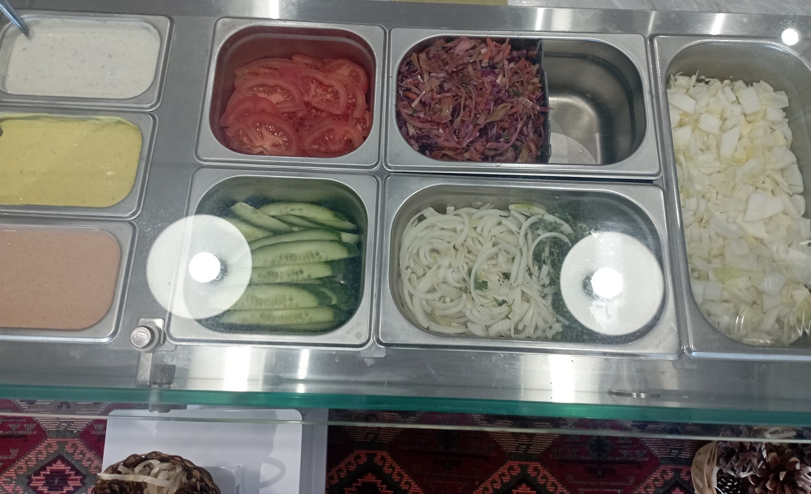
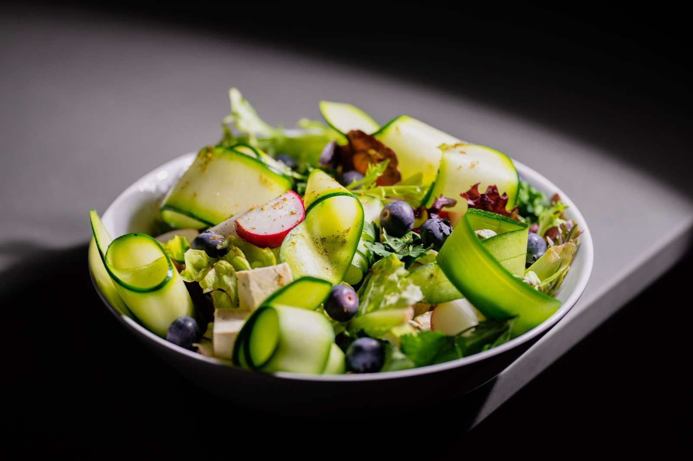
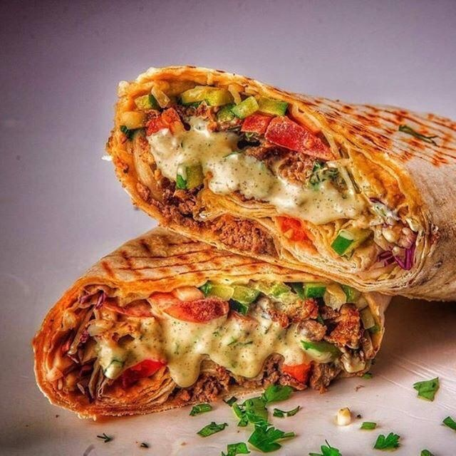

Bistro-Armenia
★ Ocena 4,5 w Google · 12 opinii
Bistro-Armenia
★ Ocena 4,5 w Google · 12 opinii

Bistro-Armenia to małe, rodzinne bistro w Swarzędzu. Robimy kebab po ormiańsku - w cienkim lawaszu zamiast grubej tortilli - i domowe dania, których nie znajdziesz w zwykłym fast foodzie: tolmę, chinkali, zupę szpinakową.
Zjesz na miejscu przy stoliku - dla dzieci mamy kącik z zabawkami - albo zadzwonisz i odbierzesz na wynos. Po jedzeniu warto zostać na kawę po ormiańsku i kawałek miodownika.
Poznaj nas →
Mięso z rożna i świeże warzywa zawinięte w cienki ormiański lawasz - nie w grubej tortilli. Trzy rozmiary, żeby każdy się najadł.

Ręcznie formowany kebab z mielonego mięsa, pieczony na grillu. W lawaszu albo na talerzu z frytkami i surówką.

Szaurma, lula albo falafel z frytkami, warzywami i sosem - porządny obiad, nie przekąska.
Trochę naszych dań i kawałek lokalu. Najlepiej przekonać się na miejscu - albo zamówić na wynos i sprawdzić u siebie.





Polecam 100% najlepszy kebab w okolicy! Świeże, smaczne, obsługa top!Daniel Ja
Dobry armeński kebab, można sie poczuć jak w AfryceMarcin
Wpadnij do nas w Swarzędzu albo zamów na wynos - wszystko robimy na świeżo.